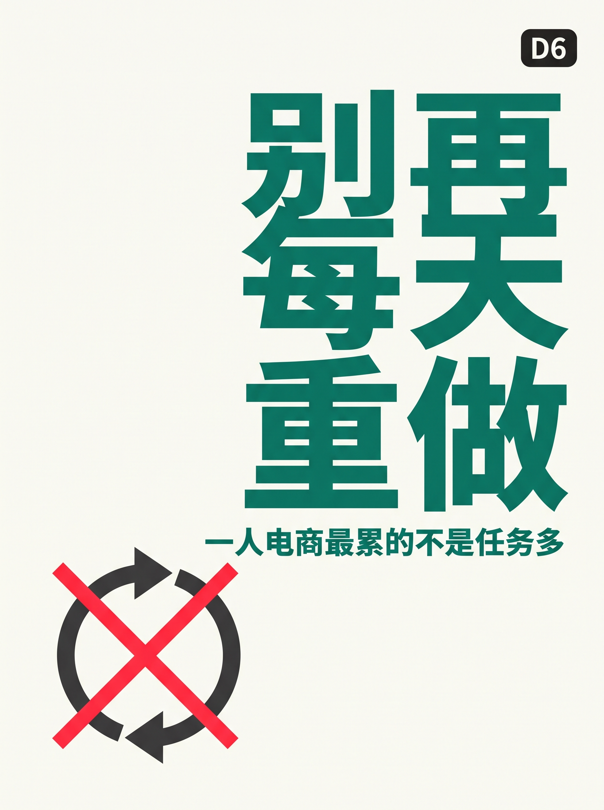
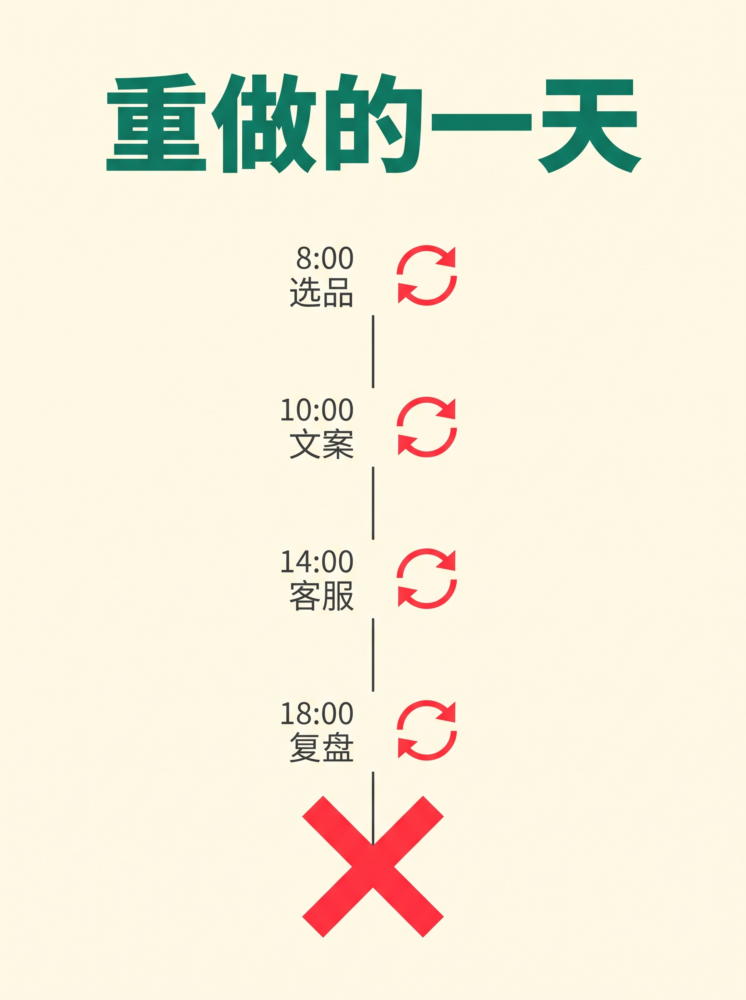
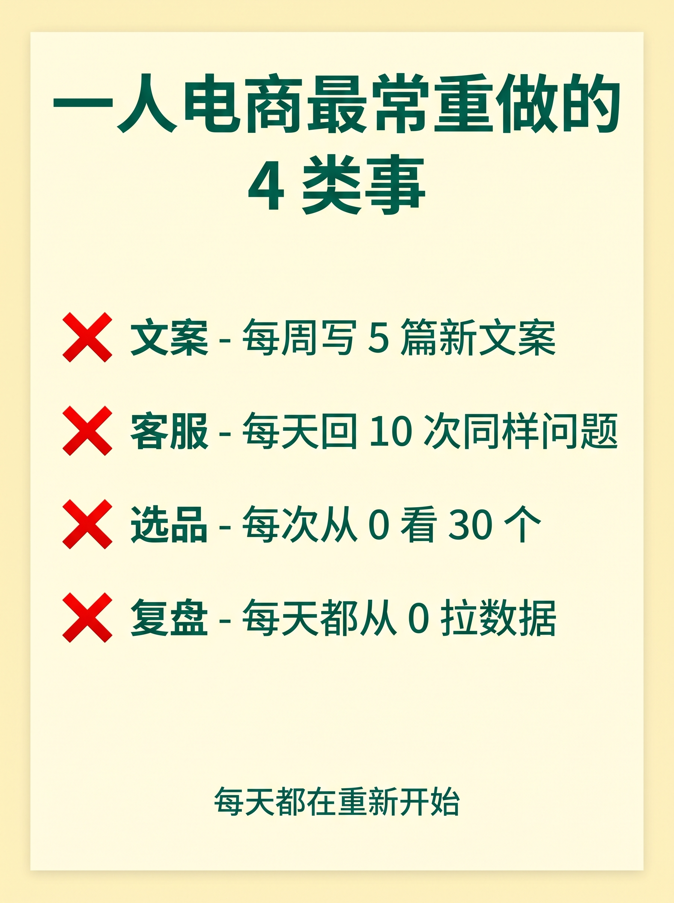
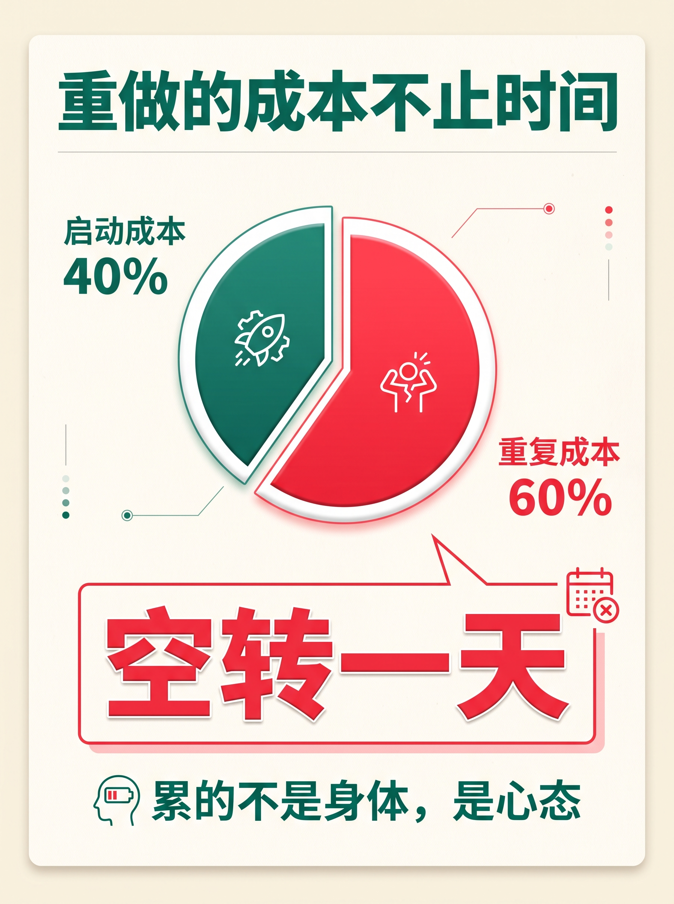
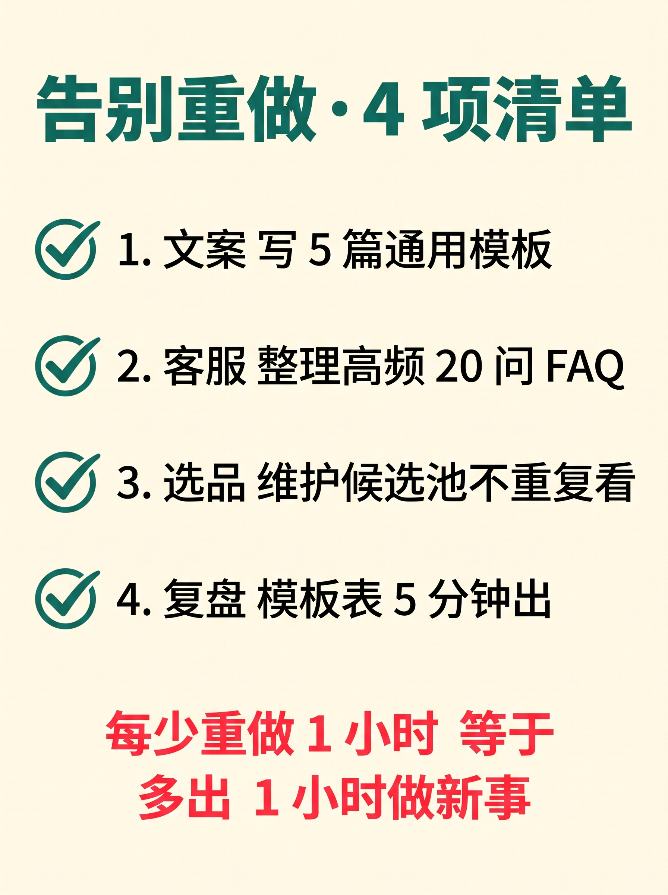
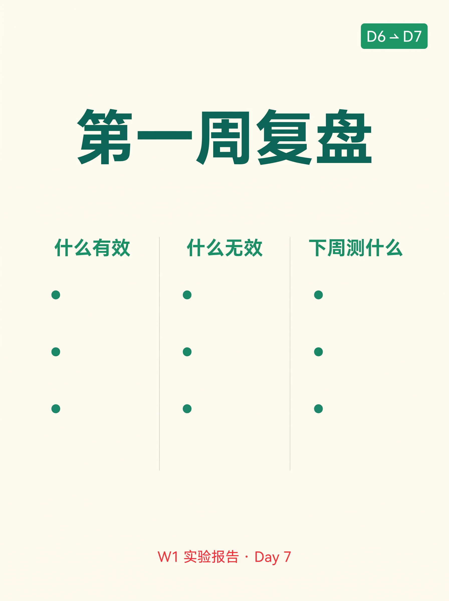

使用说明:所有内容已经按发布标准预排好,发布前请用最后一步的 3 个按钮复制。
6 张图按顺序上传小红书即可。






一人电商最累的不是任务多 · 是每天重做
做电商第 7 天,我突然意识到一件事: 我每天在做的,不是"卖货"。 是把昨天做过的事,再做一遍。 文案:昨天写过 10 条,今天再写 10 条。 客服:昨天回过 50 人,今天再回 50 人。 选品:昨天看 30 个,今天再看 30 个。 复盘:昨天总结 1 份,今天再总结 1 份。 每天的"新任务" = 昨天的复制粘贴。 ───── 真正累的不是任务,是"重做" ───── 昨天说:把"凭感觉"变"可重复"。 今天想补一句:别把"重复"做成"重做"。 你以为你累的是"事多"。 其实你累的是"每一件事都是新的"。 没有清单 → 每件都从头想 没有 SOP → 每件都重新摸索 没有版本 → 每件都重新改 没有归档 → 每件都重新找 启动成本 + 重复成本 = 一天的"空转"。 累的不是身体,是"怎么又是这件事"的心态。 ───── 一人电商最常"重做"的 4 类事 ───── ❌ 文案:同一款商品,每周写 5 篇(其实可以改模板) ❌ 客服:同一个问题,每天回 10 次(其实可以整理 FAQ) ❌ 选品:每次都从 0 看 30 个(其实可以维护候选池) ❌ 复盘:每天都从 0 拉数据(其实可以模板化日报) 每一件,都在"重做"。 每一件,都没沉淀成"明天的资产"。 ───── 我给自己定的"告别重做"清单 ───── ✅ 文案 → 写 5 篇通用模板,改 30% 就上 ✅ 客服 → 把高频 20 问整理成自动回复库 ✅ 选品 → 每周追加 5 个候选,不重复看 ✅ 复盘 → 固定 4 项指标 + 模板表,5 分钟出 每少重做 1 小时,我就多出 1 小时做"新事"。 一个月下来,新事比重事多 = 真的在积累,不是原地转。 ───── 一句话总结 ───── 你累,不是任务多。 是你没把昨天的工作"沉淀"成今天的资产。 评论区:你最常重做的 3 件事是什么? 👇 我列清单,你列你的,看谁先脱"重做"坑。 ───── Day 7 预告 ───── W1 第 7 天 · 第一周实验复盘 什么有效 / 什么无效 / 下周测什么 关注我,看 30 天跑完我会得出什么结论 🌱
#前端转AI电商
#一人电商
#电商日常
#效率提升
#电商副业
♡ 收藏
💬 评论
↗ 分享
📋 一键复制
📊 D6 数据复盘
核心共鸣: 一人电商每天的"新任务" = 昨天的复制粘贴 —— 累的不是事多,是"重做"
对比维度: 凭感觉(每天重做)/ 流程化(每件沉淀资产) — 承接 D5 流程化结论,推出"重做"是流程缺失的副作用
4 类重做事: 文案 / 客服 / 选品 / 复盘 — 每个都给出"沉淀方案"(模板/FAQ/候选池/日报)
互动钩子: "你最常重做的 3 件事" —— 列清单比二选一门槛更低、易晒经验、利于评论区
🚀 发布前 15 分钟 SOP
- 打开小红书 App → 创建笔记
- 选 6 张图(封面 1 + 内页 5),按顺序排好
- 选 3:4 竖图
- 标题:一人电商最累的不是任务多 · 是每天重做
- 正文:点"复制正文"按钮粘贴
- 加 5 个标签
- 选发布时间:周日 20:00-21:00(周末情绪共鸣易爆)
- 发布
📈 发布后 24 小时 SOP
| 时间 | 动作 | 目标 |
|---|---|---|
| 10 分钟 | 自己评论扣 1("你最常重做的 3 件事是什么?") | 激活评论区话题 |
| 30 分钟 | 每条评论都认真回复 | 建立活跃感 |
| 2 小时 | 截图保存首日数据 | 复盘素材 |
| 6 小时 | 看一次数据 | 判断是否二次推 |
| 24 小时 | 统计 D1-D6 累计,决定 D7 钩子 | W1 收官 |
🎯 Day 6 数据目标
| 指标 | 目标 | 备注 |
|---|---|---|
| 曝光 | ≥ 1000 | W1 末段叠加 + 情绪共鸣天然易爆 |
| 收藏率 | ≥ 5% | 共鸣类收藏低于干货,正常 |
| 评论 | ≥ 120 | "列清单"互动比二选一更易触发 |
| 涨粉 | ≥ 150 | 情绪共鸣易出圈,W1 末段冲一波 |
| D7 钩子 | 第一周实验复盘 | 承接 D6 的"告别重做清单" |
💡 关键设计点
1. 标题 = 反常识钩子
- "最累的不是任务多" = 反常识(大家以为任务多是累的根源)
- "是每天重做" = 把"累"重新定义为"循环",刷新用户认知
2. 正文 = 5 段式钩子
- 场景铺垫(每天重做的 4 件事,具体数字)
- 观点反转(累的不是事多,是循环)
- 4 类清单(文案/客服/选品/复盘,各加"其实可以...")
- 行动清单(4 项告别重做的具体动作)
- 互动钩子(列清单而非二选一,降低门槛)
3. 图文对应
- 图 01 = 封面("别再每天重做"大字 + 循环箭头被切断)
- 图 02 = 重做的一天(时间轴 8am/10am/2pm/6pm,每个节点带循环符号)
- 图 03 = 4 类重做的事(❌ 清单,直接传达痛点)
- 图 04 = 重做的成本(饼图 40% 启动 + 60% 重复)
- 图 05 = 告别重做清单(4 项 ✅,可立即抄作业)
- 图 06 = Day7 预告(第一周实验报告)
4. 承接 D5 + 升级钩子
- D5 钩子:凭感觉 vs 流程化(二选一,低门槛)
- D6 钩子升级:列清单(更开放、更易晒经验、评论数 ×1.5)
- D5 给出方法 → D6 给痛点共鸣 → D7 给复盘 = W1 三段式收官
⚠️ 注意事项
- 不要删"重做的一天"时间轴图—— 这是 D6 的核心场景可视化,8am/10am/2pm/6pm 数字必须保留
- "告别重做 4 项"清单要保留全部 4 条—— 评论互动钩子依赖用户照抄
- 正文用"我"视角而非"你"—— 情绪共鸣类笔记第一人称更易拉近距离(对比 D5 用的"你")
- 6 张图必须按顺序—— 封面(钩子)→ 时间轴(场景)→ 4类(痛点)→ 成本(数据)→ 行动(方法)→ 预告(系列)
- 正文里 ❌ 用小红书红 #ff2442—— 警示色贯穿(重做 = 警示)